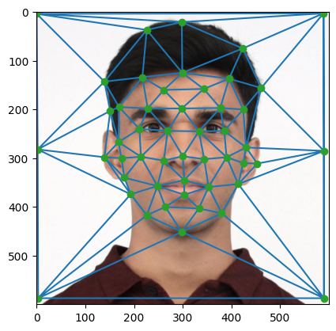
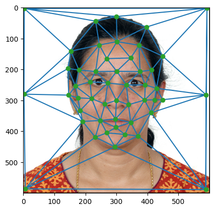

In this section, I define correspondences between my face and my mom's face.

My Face Triangulation

My Mother's Face Triangulation
In this section, I define correspondences between my face and my mom's face.
My Face Triangulation
My Mother's Face Triangulation
Here I compute the mid-way face between my image and my mother's face, as well as my grandafather and father's face.
Midway Face Between my mother and I
Midway Face Between my father and grandfather
This section shows the complete morph sequence I created between my face and my mother's.

Morph Sequence: my mother and I
For fun, I also did a morph from my grandfather to my father which was smoother.

Morph Sequence: My grandfather to father
Here I compute and analyze the mean face in the Danes dataset, and compare it with my own.
Mean Face of Danish Population
Correspondence Between Mean Dane Face and My Face
Mean Dane Face Mapped onto My Face
My Face Mapped onto Mean Dane Face
In this section, I create caricatures by extrapolating from the mean face.
My Caricatures: Set 1
My Caricatures: Set 2
As an extra feature, I've created a morph sequence of myself + my dad + grandfather altogether. Three generations, one gif. Adding music proved to be difficult, but I felt Vienna by Billy Joel provided a nice soundtrack to my life.

My Childhood to Adult Morph Sequence